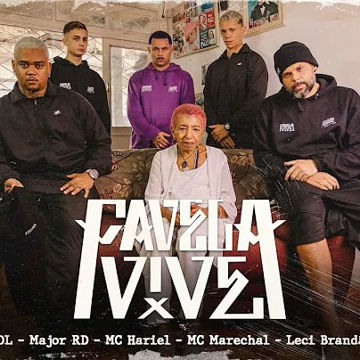

Músicas - Internacionais / Nacionais
Aqui está uma pequena lista de músicas vindas do Hip-Hop e a importância de cada uma!
Hits Internacionais:
Alguns dos rap's internacionais:
Changes: 2Pac

Importância: A música faz uma profunda reflexão sobre o racismo sistêmico, a violência policial e a desigualdade social enfrentada pelos negros nos Estados Unidos. 2Pac relata experiências pessoais, questiona políticas públicas, denuncia a guerra às drogas e o encarceramento em massa, além de expressar frustração com a falta de progresso social. Ao mesmo tempo, traz esperança de mudança e clama por união e conscientização coletiva, tornando-se um dos maiores manifestos políticos do rap.
Fight the Power: Public Enemy
Importância: Hino de resistência e protesto contra a opressão racial, a brutalidade policial e a manipulação midiática. A letra desafia instituições que perpetuam o racismo e convoca a população negra a lutar pela sua dignidade e autonomia cultural. Com versos críticos e referências históricas, é uma canção que marcou gerações e se tornou símbolo de empoderamento coletivo, usada em manifestações e protestos até hoje.
Alright: Kendrick Lamar
Importância: Símbolo do movimento Black Lives Matter, a música transmite força, fé e esperança em meio ao sofrimento causado pelo racismo e pela violência policial. Kendrick mistura espiritualidade, crítica social e afirmação da identidade negra, com refrão otimista que virou grito de resistência: “We gon’ be alright”. O contraste entre versos sobre opressão e a mensagem final de superação tornou a faixa um dos maiores hinos de libertação contemporâneos.
The Message: Grandmaster Flash and the Furious Five
Importância: Considerada a música que mudou para sempre a história do rap, foi pioneira ao trazer denúncia social direta sobre a miséria, violência e abandono das periferias urbanas. A letra narra o cotidiano de quem vive em prédios deteriorados, cercado por criminalidade e desespero. Com um tom sério e realista, rompeu o estigma de que o rap era apenas festa, inaugurando a vertente consciente e politizada.
Dear Mama: 2Pac
Importância: Um dos relatos mais emocionantes do rap, a música homenageia as mães negras que criam filhos sozinhas em meio à pobreza, drogas e violência. 2Pac reconhece os sacrifícios da própria mãe, admite erros do passado e valoriza a força das mulheres da comunidade. O tom confessional e a gratidão sincera transformaram a faixa em um tributo universal à maternidade e à superação.
Juicy: The Notorious B.I.G
Importância: Relato autobiográfico da trajetória de Biggie da pobreza extrema ao estrelato. A letra descreve a infância difícil no Brooklyn, a luta contra adversidades e o orgulho de provar que seu talento mudou seu destino. Com tom inspirador, exalta a vitória pessoal e mostra que é possível transformar realidade com persistência, tornando-se um clássico sobre conquistas no rap.
Lose Yourself: Eminem
Importância: Hino motivacional que fala sobre aproveitar cada oportunidade como se fosse a única chance. Eminem descreve a ansiedade antes de subir ao palco, a pressão de fracassar e a importância de se manter firme diante dos obstáculos. A música inspira autoconfiança e tornou-se símbolo da luta pessoal contra insegurança, sendo considerada uma das mais poderosas mensagens de determinação no rap.
N.Y. State of Mind: Nas
Importância: Retrato cru e detalhado da vida nas ruas de Nova York nos anos 90. A letra mistura imagens de violência, tráfico, ambição e sobrevivência em um ambiente hostil. Nas constrói uma narrativa cinematográfica que elevou o storytelling no rap a outro patamar, consolidando seu álbum Illmatic como obra-prima e referência de lirismo e autenticidade.
C.R.E.A.M.: Wu-Tang Clan
Importância: A sigla “Cash Rules Everything Around Me” resume a temática central da música: como o dinheiro influencia e corrompe tudo ao redor. O grupo relata vivências na pobreza, o impacto do crime organizado e a luta por sobrevivência nos guetos. Com batida marcante e letras realistas, a faixa se tornou manifesto do rap hardcore, símbolo da cultura de rua e da crítica ao capitalismo selvagem.
HUMBLE.: Kendrick Lamar

Importância: Crítica ao ego inflado e à superficialidade da indústria musical, a letra alterna ataques diretos a rivais e reflexões sobre humildade. Kendrick desafia padrões de comportamento e afirma sua autenticidade, ao mesmo tempo em que aponta contradições do sucesso. A música virou ícone cultural, destacando seu papel como voz provocadora e inovadora do rap contemporâneo.
Hits Nacionais:
Agora um pouco da nossa cultura com alguns dos rap's nacionais;
Diário de um Detento: Racionais MC's
Importância: A música é um relato em primeira pessoa do massacre do Carandiru, narrando os acontecimentos do ponto de vista de um preso que presenciou tudo. Descreve a tensão dentro da penitenciária, a brutalidade policial e o desespero dos detentos, denunciando o descaso do Estado, a violência institucional e a criminalização da pobreza. O tom realista e a força do relato fizeram dela uma obra emblemática na luta por direitos humanos no Brasil.
Capítulo 4, Versículo 3: Racionais MC's
Importância: Retrato das escolhas difíceis e da violência cotidiana enfrentada por jovens negros e pobres. A letra mostra a rotina de criminalidade como uma consequência da desigualdade e falta de oportunidades, questionando valores e denunciando a hipocrisia social. É uma reflexão sobre sobrevivência, poder e o preço da ambição em uma sociedade que marginaliza quem nasce na periferia.
Mandume: Emicida
Importância: A música celebra a força, a união e o orgulho da ancestralidade negra, evocando figuras históricas de resistência. Emicida, junto com outros MCs, reforça a importância de manter as raízes e combater o racismo, afirmando a identidade e a dignidade da população negra. O tom é de vitória coletiva e construção de uma nova consciência, inspirando autoestima e valorização cultural.
Soldado do Morro: MV Bill
Importância: A canção acompanha a vida de um jovem criado na favela que entra para o tráfico de drogas. MV Bill humaniza o personagem ao mostrar seus dilemas, medos e sonhos, expondo como a violência e o abandono social empurram crianças e adolescentes para o crime. A letra denuncia a desigualdade e propõe reflexão sobre responsabilidade coletiva e empatia.
Ponta de Lança: Rincón Sapiência
Importância: A música exalta a autoestima negra e celebra o protagonismo periférico. Com referências ao futebol e à cultura de rua, Rincón cria uma metáfora sobre driblar dificuldades, valorizando as origens e reivindicando espaço e respeito. O tom é afirmativo e vibrante, mostrando orgulho da identidade e da história.
Vida Loka (Parte 2): Racionais MC's
Importância: Reflexão sobre poder, ambição, escolhas e consequências na vida do crime. Mano Brown narra dilemas de quem se envolve em atividades ilícitas e ao mesmo tempo busca dignidade e respeito. A música alterna tom de confissão e alerta, chamando atenção para a necessidade de consciência, união e transformação social.
Triunfo: Emicida
Importância: A canção é um manifesto de superação e conquista. Emicida compartilha sua trajetória, do anonimato às grandes conquistas, mostrando que o rap pode ser ferramenta de mudança. Com tom inspirador, fala sobre trabalho duro, inteligência e orgulho de vir da periferia, se tornando exemplo de que é possível vencer com autenticidade e talento.
Não Existe Amor em SP: Criolo
Importância: A letra é uma crítica poética e melancólica à frieza e à desigualdade social de São Paulo. Criolo retrata a cidade como um lugar de solidão, consumo excessivo e falta de empatia, onde os sentimentos se perdem na pressa e na indiferença. A música é um convite à reflexão sobre o vazio das relações superficiais e a necessidade de mais humanidade.
Só Deus Pode Me Julgar: MV Bill
Importância: MV Bill denuncia o racismo, a violência policial e a hipocrisia social que criminalizam jovens negros e pobres. A letra questiona privilégios, critica políticos corruptos e meios de comunicação sensacionalistas, afirmando que só Deus pode julgá-lo. É um manifesto de resistência, autoestima e orgulho de origem, que convoca a consciência coletiva e a dignidade.
Favela Vive 5: Part; Marechal, Major RD, MC Hariel, Leci Brandão e DK47

Importância: A música denuncia a violência policial e o genocídio da juventude negra e periférica no Brasil. Traz relatos reais de perdas, desigualdades e injustiças históricas contra a favela, criticando o abandono do Estado, o racismo estrutural e a cultura superficial propagada pelas redes sociais. Os versos exaltam a resistência, a importância da consciência social e a urgência de políticas públicas que priorizem educação, cultura e dignidade. É um manifesto de dor, memória e esperança, afirmando que, apesar da luta diária pela sobrevivência, a favela resiste e quer viver.
Olho de Tigre: Djonga
Importância: A música é um relato de superação, coragem e foco, em que Djonga compara sua determinação ao “olho de tigre”. Ele fala sobre as dificuldades de quem vem da periferia, a necessidade de manter autoestima, a valorização da identidade negra e a independência conquistada pelo trabalho. Ao repetir “fogo nos racistas”, Djonga reforça sua oposição firme ao racismo estrutural e denuncia a opressão vivida por pessoas negras no Brasil, transformando sua voz em manifesto de resistência e inspiração.
Brasil de Quem (Vol. 1 a 7): Sid
Importância: A série “Brasil de Quem” traz sete capítulos que formam um extenso manifesto sobre desigualdade social, racismo, violência estatal e as contradições da sociedade brasileira. Sid expõe a falta de oportunidades na periferia, critica o privilégio branco, questiona a meritocracia e denuncia o papel das elites políticas e econômicas na manutenção das injustiças históricas. Cada volume aprofunda temas como o genocídio da população preta, o encarceramento em massa, a corrupção institucional, a exploração cultural e a indiferença social diante da pobreza. Com letras contundentes, referências diretas ao cotidiano e reflexões sobre identidade, Sid faz uma crônica sobre um Brasil dividido entre quem sempre teve acesso a tudo e quem luta diariamente para sobreviver. A série se tornou uma das obras mais marcantes do rap nacional recente pela coerência, impacto e coragem das denúncias.
Cachimbo da Paz (Parte 1): Gabriel o Pensador
Importância: Na Parte 1, Gabriel o Pensador conta a história de um jovem indígena que abandona sua aldeia e vai para a cidade em busca de oportunidades, mas acaba caindo no tráfico de drogas e na violência. A música usa o “cachimbo” como metáfora de uma paz ilusória e denuncia como a sociedade marginaliza povos tradicionais, reproduz preconceito contra indígenas e naturaliza a criminalização da pobreza. Entre versos de reflexão e crítica social, a canção confronta o ouvinte com a realidade de quem é excluído pelo sistema e julgado pelo rótulo de criminoso, enquanto as verdadeiras causas (Alcolismo, etc.) ficam intocadas.
Cachimbo da Paz 2: Gabriel o Pensador, Lulu Santos & Xamã
Importância: Continuação do clássico de Gabriel o Pensador, a música retoma temas de crítica social e debate sobre drogas, violência e hipocrisia institucional, agora incorporando vozes contemporâneas como Xamã e Lulu Santos. A letra reforça a mensagem de resistência e união contra a opressão, com versos que evocam consciência coletiva. Em 2024, venceu o Grammy Latino na categoria Melhor Interpretação Urbana em Língua Portuguesa, consolidando seu impacto cultural e relevância na música brasileira.
Levanta e Anda: Emicida
Importância: Canção que traz uma mensagem de superação, resistência e autoestima para a periferia brasileira. Emicida aborda os desafios enfrentados por jovens negros e periféricos, incentivando-os a não desistir diante das dificuldades sociais, do racismo e da desigualdade. A música enfatiza a necessidade de manter a força, a coragem e a esperança para transformar realidades adversas, celebrando a cultura e identidade negra como fonte de orgulho e resistência. Levante e Lute!
Eu Não Sou Racista: Nego Max
Importância: A música simula uma conversa em que a pessoa branca inicia afirmando que “não é racista”, mas, à medida que vai expondo seus argumentos, acaba revelando preconceitos arraigados. O discurso começa com justificativas e negações (“minha empregada era preta”, “somos todos humanos”), mas evolui para acusações veladas (“vocês reclamam demais”, “não fazem nada para mudar”) e comentários que culpabilizam os negros pela desigualdade. Em contrapartida, a voz preta contrapõe essas falas mostrando como esse racismo disfarçado sustenta a opressão estrutural e a desigualdade histórica, criando um retrato contundente da negação e perpetuação do preconceito no cotidiano.
LUTO: Djonga e Black
Importância: Na letra, Djonga e Black confrontam o racismo estrutural e a hipocrisia da indústria musical, denunciando a falsa vivência de artistas que romantizam armas e violência sem conhecerem a realidade das periferias. Black reafirma seu compromisso com autenticidade e critica os que julgam estereótipos sobre corpos negros, enquanto Djonga ironiza MCs brancos que fingem sofrimento e cobram pureza de quem precisa sobreviver. O refrão, repetindo que "preto no topo combina", se torna uma celebração do orgulho negro e um desafio direto a quem tenta negar essa afirmação. É uma faixa de enfrentamento, autoestima e denúncia contra o racismo velado e explícito.
PseudoSocial: Froid
Importância: Nessa faixa, Froid faz uma crítica dura à cultura do “pseudosocial” — onde pessoas aparentam se importar com causas apenas para ganhar visibilidade. Ele denuncia a hipocrisia de quem faz discursos vazios e calcados em aparências, enquanto ignora problemas reais. A letra confronta a superficialidade nas redes, ressaltando como as verdadeiras lutas sociais são ignoradas em favor de posturas performáticas. O impacto da música está no convite à reflexão: mais ação concreta, menos ostentação solidária.